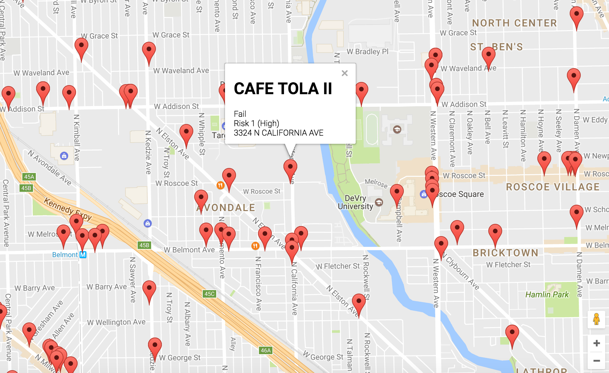

Lane Tech Bus Tracker
With this app students that go to Lane Tech will no longer have to use the CTA bus tracker anymore. Instead of having to go through multiple windows and having to click the route they want in the dropdown boxes, all they have to do is open the app and find the bus they want. Only the buses by Lane Tech are displayed so it's only a matter of knowing which bus you're taking and finding it in the list of buses. No more having to fill out four different dropdown boxes with over 100 different bus routes.
Crime Search 2016
For this app people can search through the crimes that happened in on any street of Chicago in 2016. You put the block address in the search box or just click the crime type from the dropdown box. With this app you can see where and when a crime happened and it gives you a description of it as well.

New York Times Article Search
This website allows people to search for articles based on what they write in the search box. This allows people to search for articles that they're interetsed in much quicker and once they find it they can open the article on the New York Times website and read the whole thing.

Food Inspections Map
This is a Google Map with markers on it for many different restaurants. If you click on one of the markers it will give you the name of the restaurant and will give you information about if the restaurant failed or passed their last food inspection so you can figure out if you really want to go to that restaurant or not.

Airhorn
This app is just a fun thing to play around with and annoy your friends and family with. When you click the red button it makes an airhorn noise. The sound is annoying and will get your friends and family wanting to break your phone so watch out!
Tip Calculator
This is a very simple yet very useful app. While you're at a restaurant and you get the check after finishing your meal and you're wondering how much money to give the waiter or waitress, then this app will be very helpful to you. All you need to do is put the check amount and the tip percent and the app will tell you the tip amount.